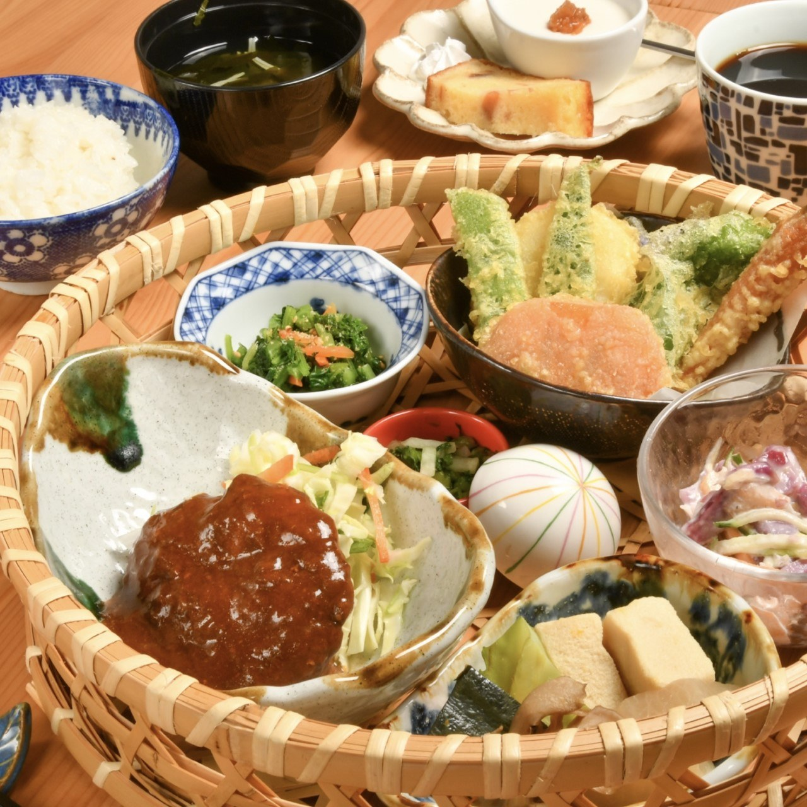
| 営業時間 | ランチ11:00〜15:00(LO14:00)／ディナー18:00〜21:30(要予約) |
|---|---|
| 定休日 | 月曜（祝日の場合は翌火曜） |
| 住所 | 奈良県橿原市今井町4-10-6 |
| 予約 | ディナーは要予約 — ☎ 0744-48-0458 ／ 公式サイト |
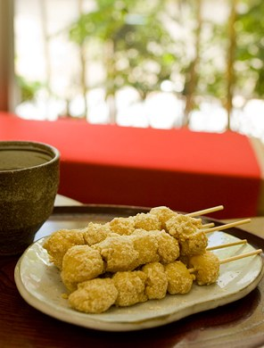
| 営業時間 | 8:30〜17:00（売り切れ次第終了） |
|---|---|
| 定休日 | 火曜・第1水曜 |
| 住所 | 奈良県橿原市東坊城町860 |
| 予約 | 不可 — ☎ 0744-27-4340 ／ 公式サイト |
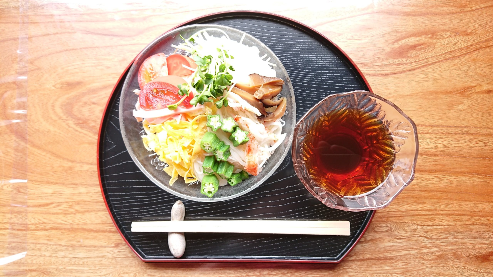
| 営業時間 | 9:30〜17:00（LO16:30） |
|---|---|
| 定休日 | 火・水・木曜（祝日は営業） |
| 住所 | 奈良県橿原市今井町1-5-1 |
| 予約 | 不可 — ☎ 090-5517-7094 ／ 公式サイト |
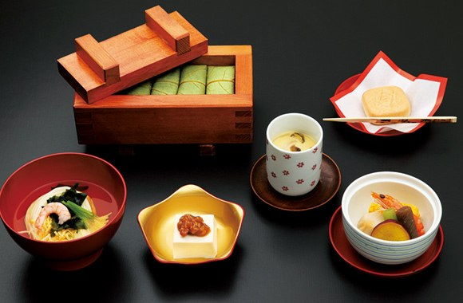
| 営業時間 | 8:00〜19:00 |
|---|---|
| 定休日 | 年中無休（年末年始は変更の場合あり） |
| 住所 | 奈良県橿原市見瀬町701-1 |
| 予約 | 不要（店頭販売） — ☎ 0744-28-8010 ／ 公式サイト |
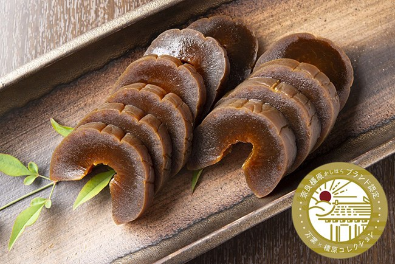
| 営業時間 | 10:00〜17:00 |
|---|---|
| 定休日 | 月曜 |
| 住所 | 奈良県橿原市久米町577番地 |
| 予約 | 不要（店頭販売） — ☎ 0744-28-1600 ／ 公式サイト |
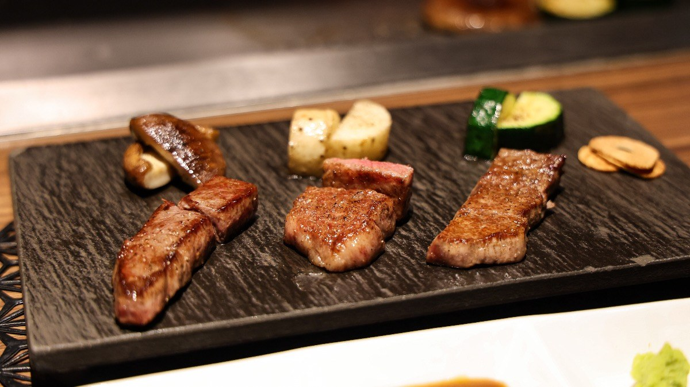
| 営業時間 | ランチ11:30〜14:30(LO13:30)／ディナー17:30〜23:00 |
|---|---|
| 定休日 | 火曜 |
| 住所 | 奈良県橿原市内膳町1丁目2-7 |
| 予約 | 可 — ☎ 0744-22-1010 ／ 公式サイト |
| 営業時間 | 8:00〜20:00 |
|---|---|
| 定休日 | 年中無休 |
| 住所 | 奈良県橿原市久米町905-2 橿原オークホテル1階 |
| 予約 | 不要（店頭販売） — ☎ 0744-23-2525 ／ 公式サイト |
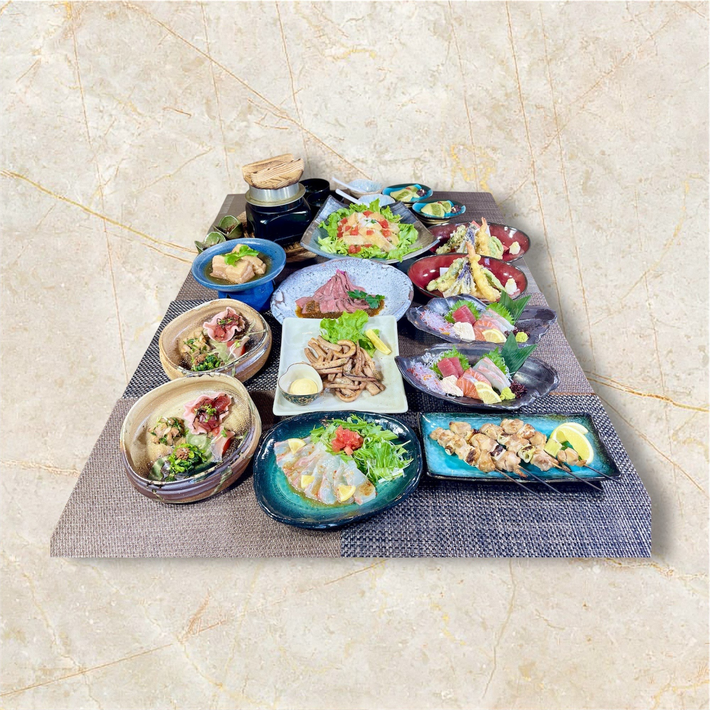
| 営業時間 | 11:00〜15:00(LO14:50)／17:00〜23:00(LO21:50) |
|---|---|
| 定休日 | 火曜 |
| 住所 | 奈良県橿原市縄手町150-1 |
| 予約 | 可 — ☎ 0744-29-5678 ／ 公式サイト |
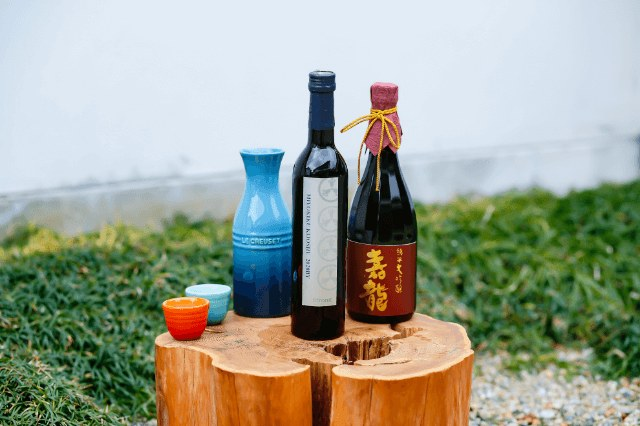
| 営業時間 | 9:00〜17:00 |
|---|---|
| 定休日 | 3〜10月は土日祝、11〜2月は日祝 |
| 住所 | 奈良県橿原市御坊町8 |
| 予約 | 蔵見学は要予約 — ☎ 0744-22-2419 ／ 公式サイト |
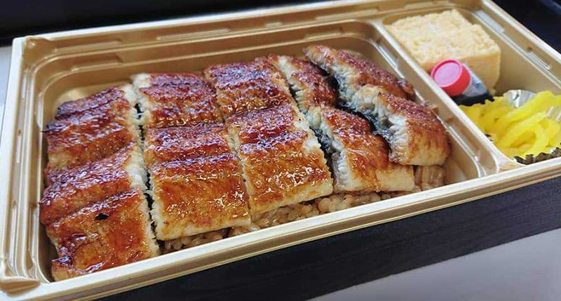
| 営業時間 | 昼11:45〜14:00／夜 平日17:30〜22:00・土日祝18:00〜22:00 |
|---|---|
| 定休日 | 不定休 |
| 住所 | 奈良県橿原市葛本町497-5 |
| 予約 | 要予約（完全予約制） — ☎ 0744-23-9307 ／ 公式サイト |
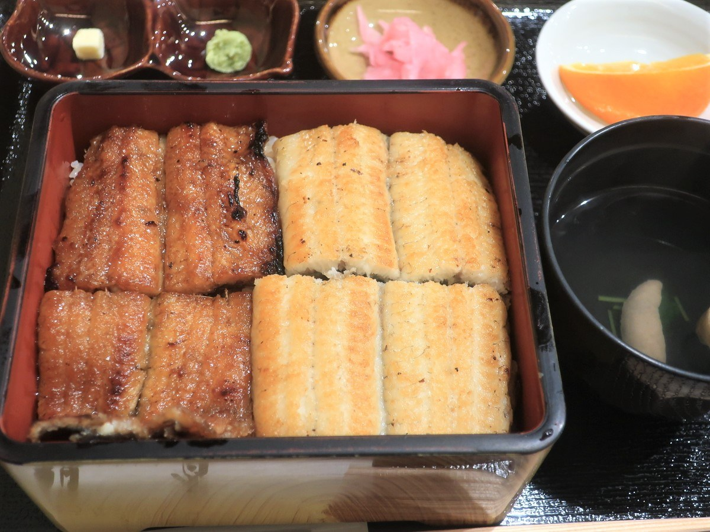
| 営業時間 | 11:00〜15:00／17:00〜21:30 |
|---|---|
| 定休日 | 水曜・第3火曜日 |
| 住所 | 奈良県橿原市醍醐町263-1 |
| 予約 | 可（ネット予約あり） — ☎ 0744-41-9002 ／ 公式サイト |
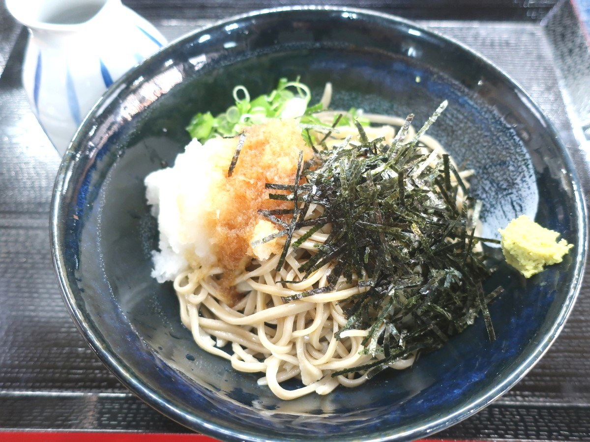
| 営業時間 | 11:30〜13:30／17:30〜22:00 |
|---|---|
| 定休日 | 月曜日 |
| 住所 | 奈良県橿原市今井町1丁目4-35 |
| 予約 | 要確認 — ☎ 0744-29-3807 |
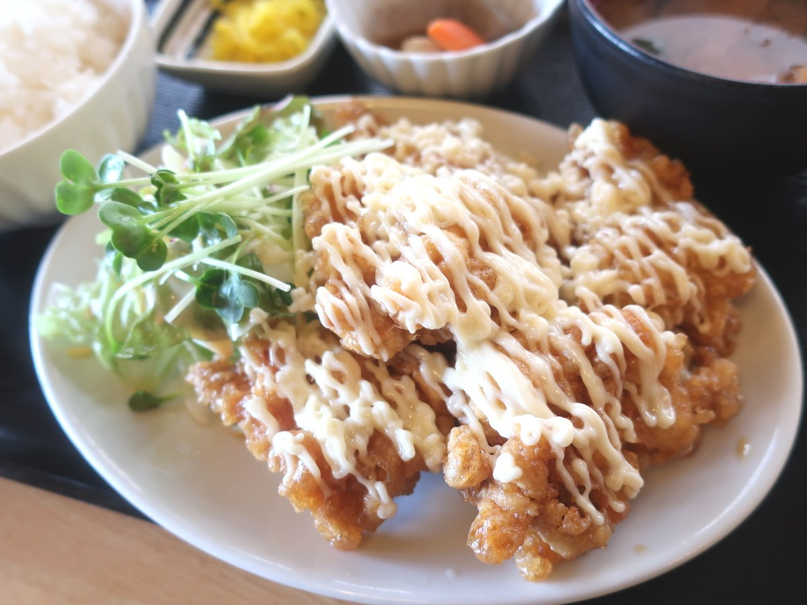
| 営業時間 | 11:00〜14:30 |
|---|---|
| 定休日 | 日曜・祝日 |
| 住所 | 奈良県橿原市白橿町1-32-14 |
| 予約 | 要確認 — ☎ 0744-27-7999 |
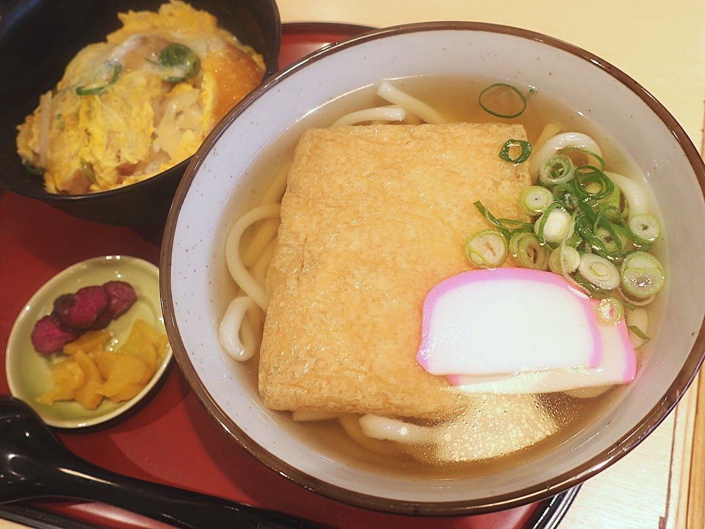
| 営業時間 | 11:00〜20:00 |
|---|---|
| 定休日 | 無休 |
| 住所 | 奈良県橿原市久米町618 |
| 予約 | 要確認 — ☎ 0744-24-6835 |
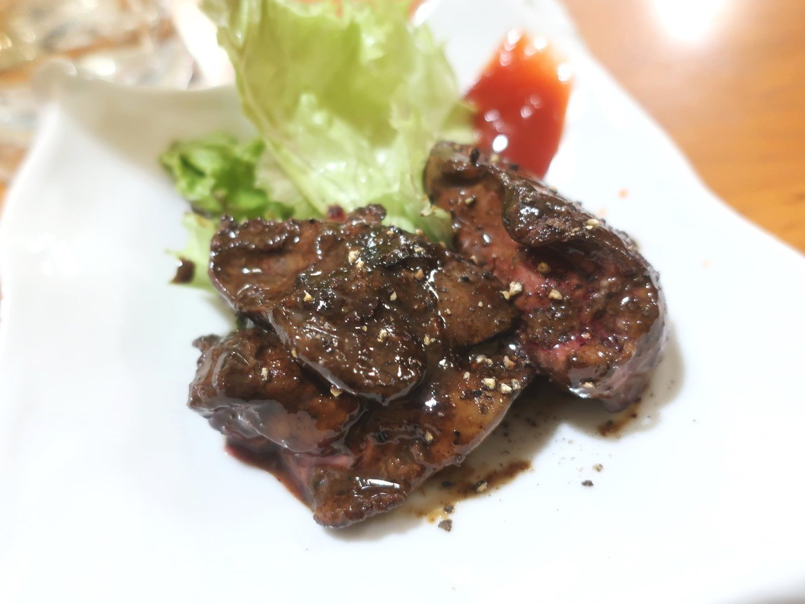
| 営業時間 | 11:00〜23:00 |
|---|---|
| 定休日 | 不定休 |
| 住所 | 奈良県橿原市内膳町1-2-14 八木ビル2F |
| 予約 | 要確認 — ☎ 0744-22-7567 |
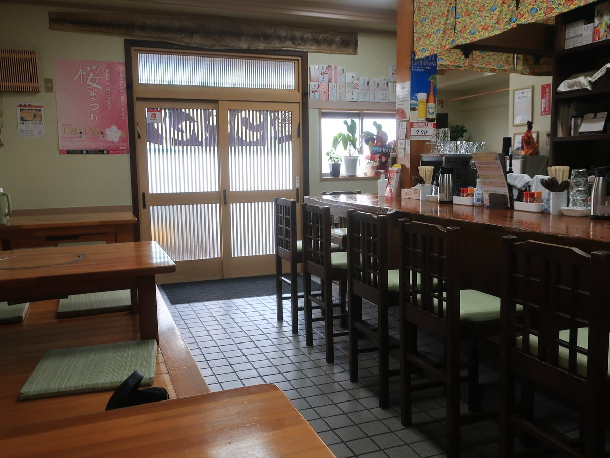
| 営業時間 | 17:00〜22:30（土日は11:30〜13:30も営業） |
|---|---|
| 定休日 | 月曜日 |
| 住所 | 奈良県橿原市見瀬町607-1 |
| 予約 | 要確認 — ☎ 0744-47-1117 |
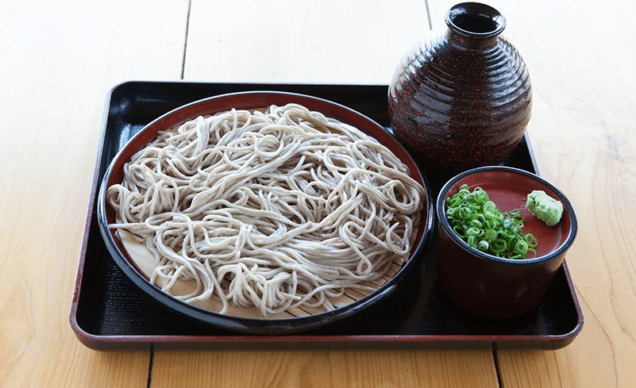
| 営業時間 | 直売所 9:00〜16:00／食堂 10:00〜16:00 |
|---|---|
| 定休日 | 水曜日（祝日と1・4・9月28日を除く）、12月30・31日 |
| 住所 | 奈良県桜井市大字笠4408 |
| 予約 | 要確認 — ☎ 0744-48-8410 ／ 公式サイト |
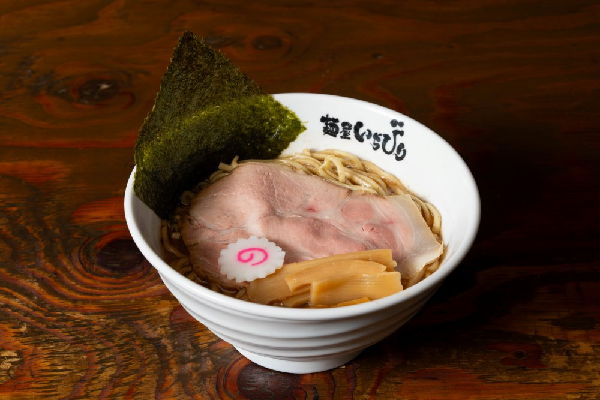
| 営業時間 | 要確認（公式サイトに営業時間の明記なし。定休は不定休でSNS告知） |
|---|---|
| 定休日 | 不定休（Instagram等SNSで告知） |
| 住所 | 奈良県橿原市久米町593 小柳ビル1F |
| 予約 | 不可 — ☎ 0744-27-2223 ／ 公式サイト |
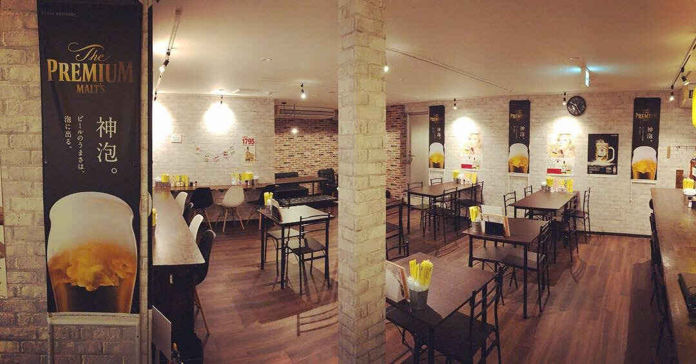
| 営業時間 | 11:00〜22:00 |
|---|---|
| 定休日 | 要確認（公式ページに定休日の記載なし） |
| 住所 | 奈良県橿原市久米町618 |
| 予約 | 不可 — ☎ 0744-47-3358 ／ 公式サイト |
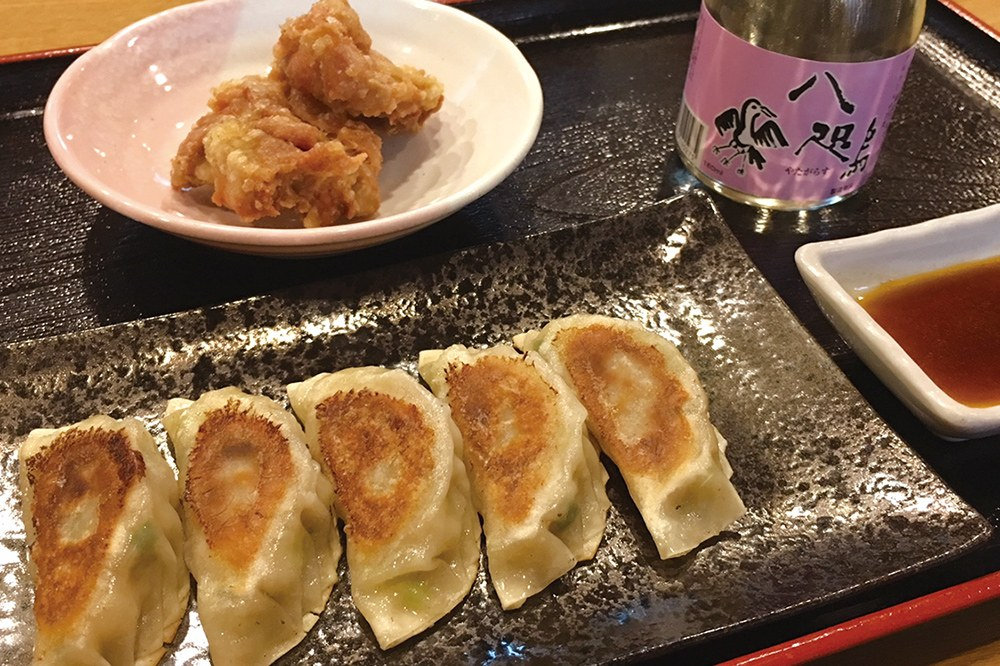
| 営業時間 | 11:00〜15:00、17:30〜22:00 |
|---|---|
| 定休日 | 日曜 |
| 住所 | 奈良県橿原市内膳町5丁目1-22 |
| 予約 | 不可 — ☎ 0744-22-5481 ／ 公式サイト |
| 営業時間 | 平日11:00〜15:00・17:00〜23:00（L.O.22:00）、土日祝11:00〜23:00（L.O.22:00） |
|---|---|
| 定休日 | 第1木曜日 |
| 住所 | 奈良県橿原市新口町267-1 |
| 予約 | 不可 — ☎ 0744-25-5650 ／ 公式サイト |
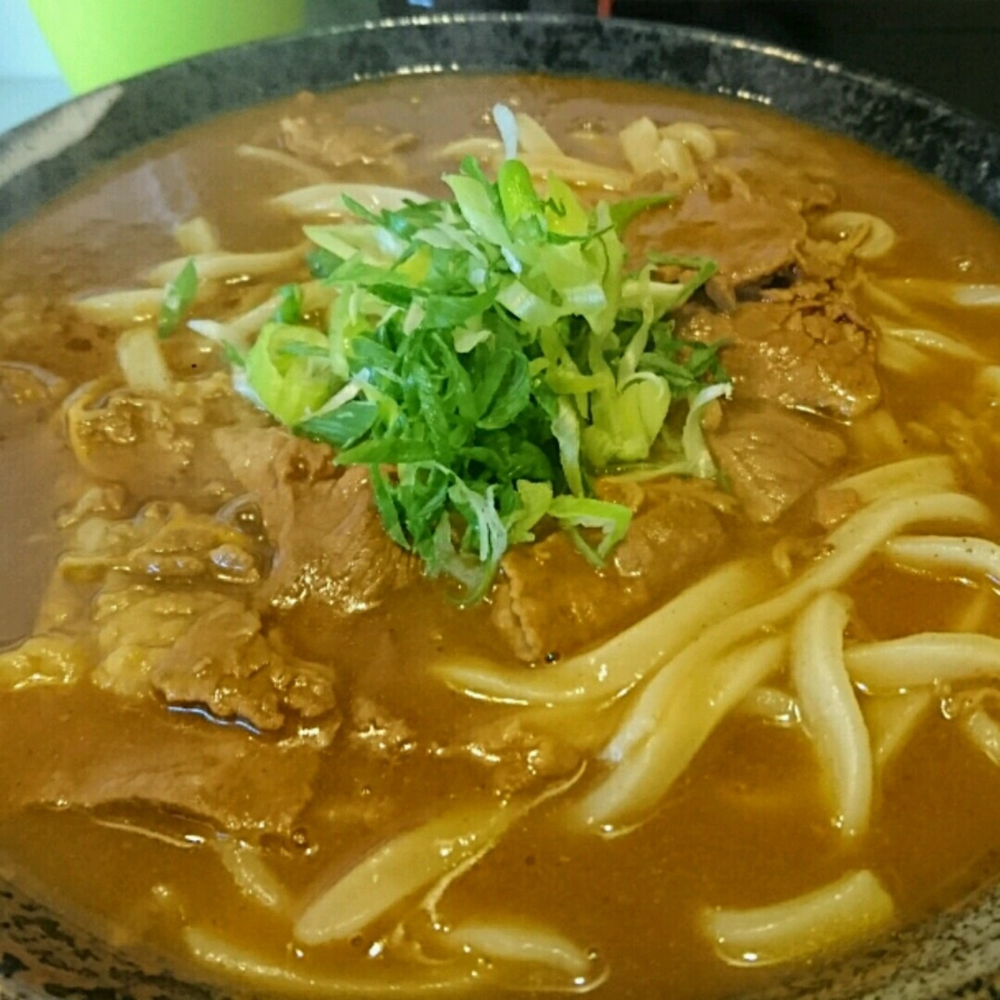
| 営業時間 | 火〜日 11:00〜15:00 |
|---|---|
| 定休日 | 月曜 |
| 住所 | 奈良県橿原市新堂町146-1 ヤングプラザ1F |
| 予約 | 不可 — ☎ 0744-24-5550 |
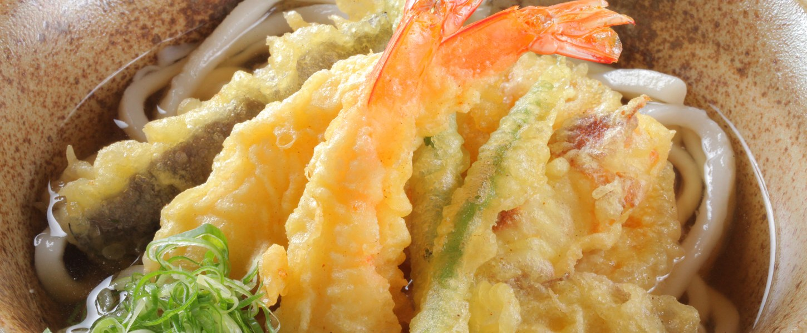
| 営業時間 | 11:30〜14:00（L.O.13:30）、17:00〜22:00（L.O.21:00） |
|---|---|
| 定休日 | 月曜（このほか臨時休業あり） |
| 住所 | 奈良県橿原市太田市町19-1 |
| 予約 | 可（要問合せ） — ☎ 0744-23-6303 ／ 公式サイト |
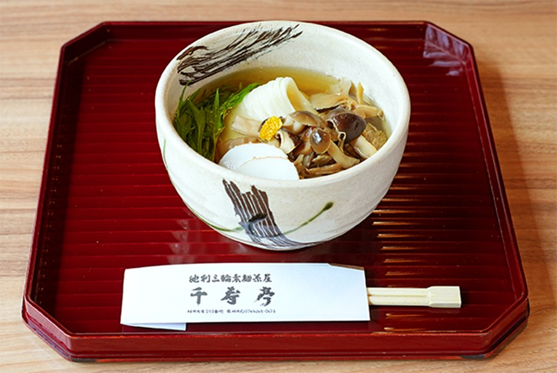
| 営業時間 | 11:00〜16:00（L.O.15:00） |
|---|---|
| 定休日 | 第2・第4木曜日／金曜日、年末年始 |
| 住所 | 奈良県桜井市芝293 |
| 予約 | 可（要問合せ） — ☎ 0744-45-0626 ／ 公式サイト |
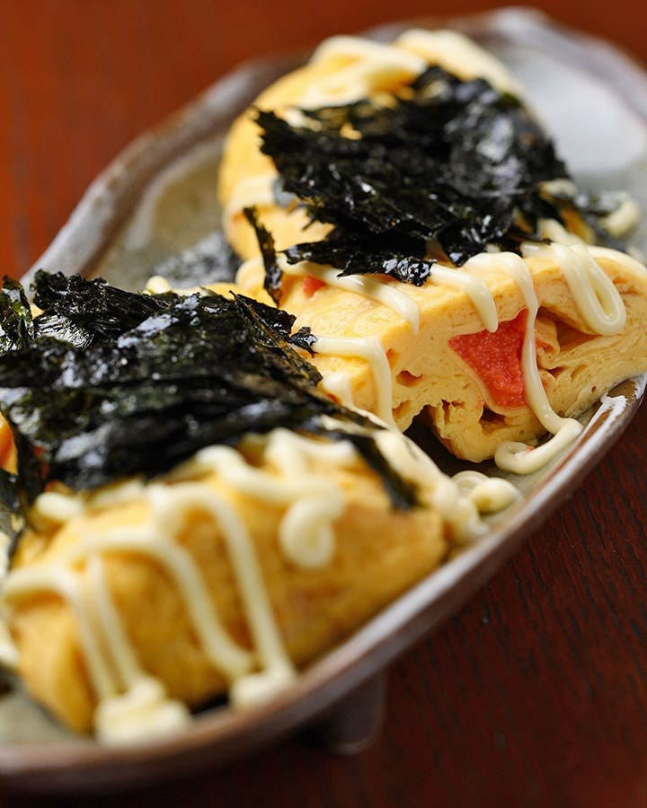
| 営業時間 | 月〜木・日 15:00〜24:00（L.O.23:00）／金・土・祝前日・祝日 15:00〜翌1:00（L.O.24:00） |
|---|---|
| 定休日 | 元日のみ（それ以外は無休） |
| 住所 | 奈良県橿原市内膳町5-137-1 ヤマトレジャーセンタービル3F |
| 予約 | 可（ネット予約可） — ☎ 050-5485-3697 ／ 公式サイト |
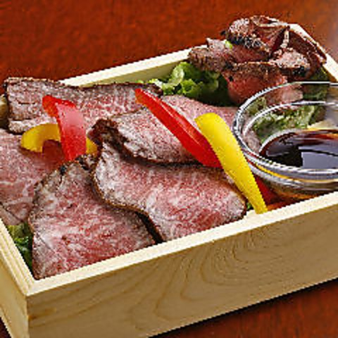
| 営業時間 | 17:30〜24:00（L.O.23:00） |
|---|---|
| 定休日 | 無し（年中無休） |
| 住所 | 奈良県橿原市内膳町1-4-12 |
| 予約 | 可 — ☎ 0744-23-7788 ／ 公式サイト |
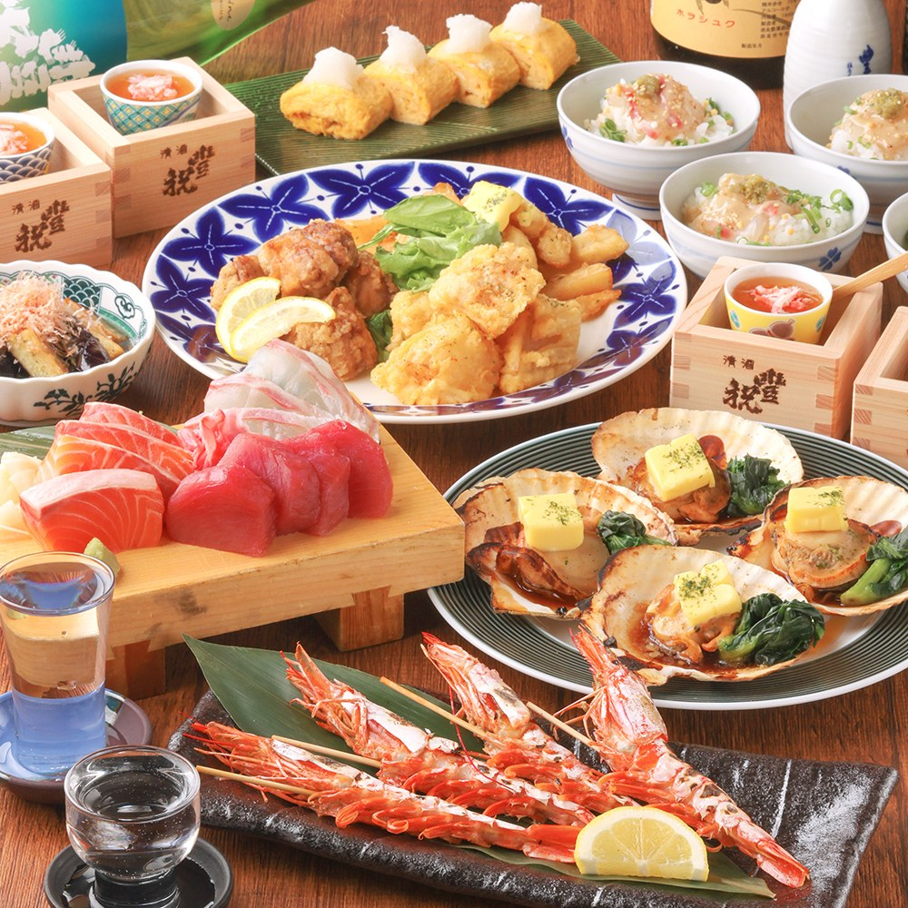
| 営業時間 | 月〜金・祝前日 17:00〜23:30（L.O.23:00）／土・日・祝日 14:00〜23:30（L.O.23:00） |
|---|---|
| 定休日 | なし |
| 住所 | 奈良県橿原市内膳町５－２－３９ かとう駅前第２ビル２F |
| 予約 | 可 — ☎ 050-5447-4132 ／ 公式サイト |
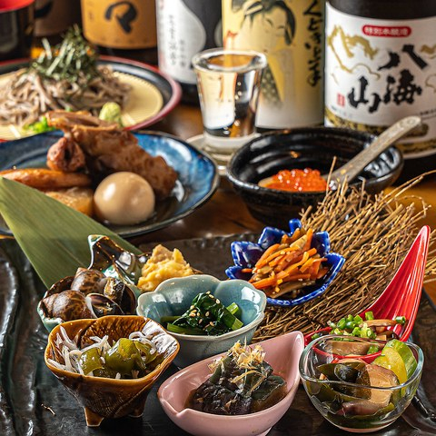
| 営業時間 | 火〜日、祝日、祝前日 17:00〜翌0:00 |
|---|---|
| 定休日 | 月曜日 |
| 住所 | 奈良県橿原市中曽司町137-3 ますがマンション1F |
| 予約 | 可（ネット予約可） — ☎ 0744-37-1170 ／ 公式サイト |
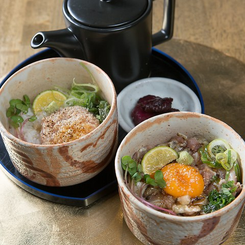
| 営業時間 | 月〜土、祝日、祝前日 17:00〜23:00（料理L.O.22:30 ドリンクL.O.22:30） |
|---|---|
| 定休日 | 日曜日 |
| 住所 | 奈良県橿原市北八木町１-5-2 2F |
| 予約 | 可（ネット予約可） — ☎ 0744-25-0275 ／ 公式サイト |
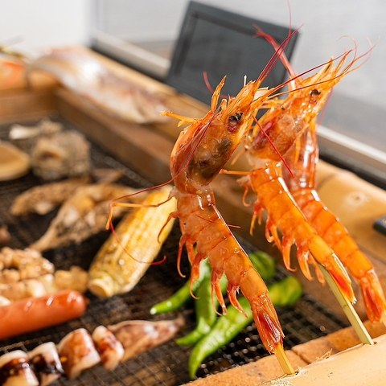
| 営業時間 | 火〜日、祝日、祝前日 17:00〜翌0:00（料理L.O.23:00 ドリンクL.O.23:30） |
|---|---|
| 定休日 | 月曜日 |
| 住所 | 奈良県橿原市石川町425 オークマンション1階 |
| 予約 | 可（ネット予約可） — ☎ 0744-55-7280 ／ 公式サイト |
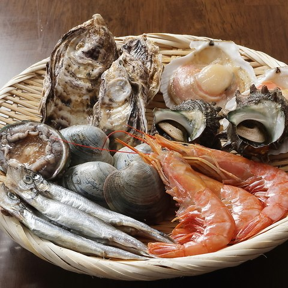
| 営業時間 | 火〜日、祝日、祝前日 18:00〜翌0:00（料理L.O.23:00 ドリンクL.O.23:00） |
|---|---|
| 定休日 | 月曜日 |
| 住所 | 奈良県橿原市四条町７７９－２ 市場プラザ１８ |
| 予約 | 可（ネット予約可） — ☎ 080-7468-5418 ／ 公式サイト |
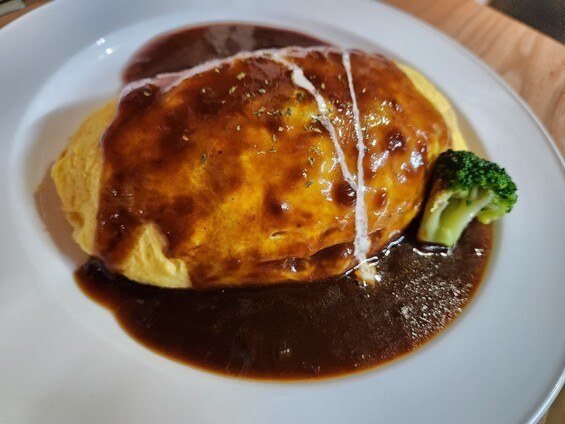
| 営業時間 | 昼 10:30〜15:00／夜 17:00〜20:30 |
|---|---|
| 定休日 | 日曜、年末年始（12/29〜1/5） |
| 住所 | 奈良県橿原市北八木町1-6-18 |
| 予約 | 可（電話） — ☎ 0744-24-3889 ／ 公式サイト |
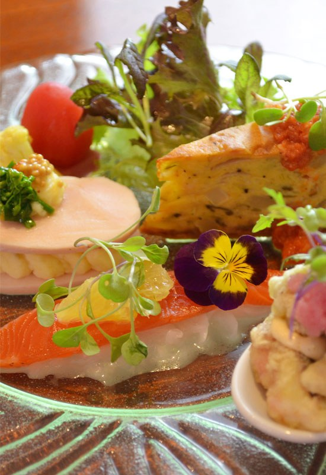
| 営業時間 | 昼 12:00〜14:00（L.O.13:00）／夜 18:00〜22:00（L.O.20:00） |
|---|---|
| 定休日 | 水曜、第1・第3火曜 |
| 住所 | 奈良県橿原市北八木町1-1-8 橿原中央ビル1F |
| 予約 | 可 — ☎ 0744-22-7739 ／ 公式サイト |
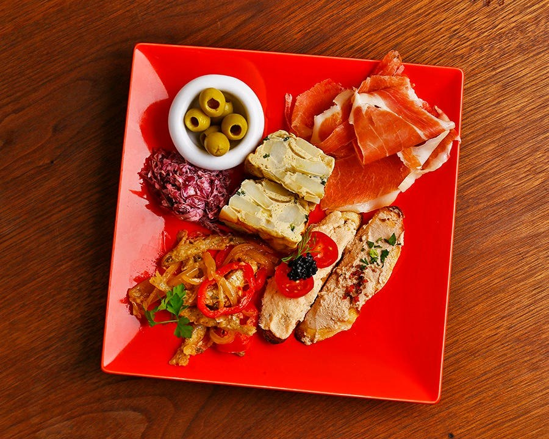
| 営業時間 | 火〜日・祝 17:00〜翌2:00（フードL.O.24:00・ドリンクL.O.1:00） |
|---|---|
| 定休日 | 月曜、第1・第3火曜 |
| 住所 | 奈良県橿原市内膳町1-2-13 1F/2F |
| 予約 | 可 — ☎ 0744-22-3001 ／ 公式サイト |
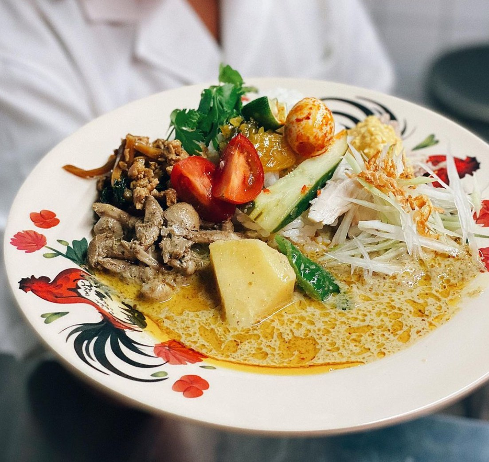
| 営業時間 | 木〜火 18:00〜23:00（不定期に昼営業・臨時休業あり） |
|---|---|
| 定休日 | 水曜（+不定休、Instagramで告知） |
| 住所 | 奈良県橿原市南八木町1-4-15 |
| 予約 | 可 — ☎ 0744-48-3604 ／ 公式サイト |
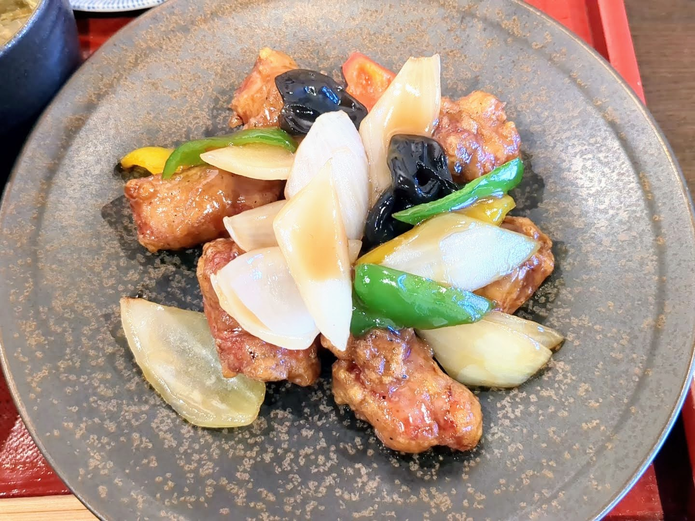
| 営業時間 | 昼 11:00〜14:30／夜 17:30〜22:00 |
|---|---|
| 定休日 | 火曜（不定休あり） |
| 住所 | 奈良県橿原市今井町1-4-12 |
| 予約 | 推奨 — ☎ 050-8892-9978 ／ 公式サイト |
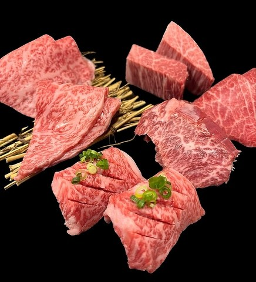
| 営業時間 | 月〜木 11:00〜14:30／17:30〜21:30、金 11:00〜14:30／17:30〜22:00、土日祝 11:00〜15:00／17:00〜22:00 |
|---|---|
| 定休日 | 12月31日のみ |
| 住所 | 奈良県橿原市大久保町310-5 |
| 予約 | 可 — ☎ 0744-55-2900 |
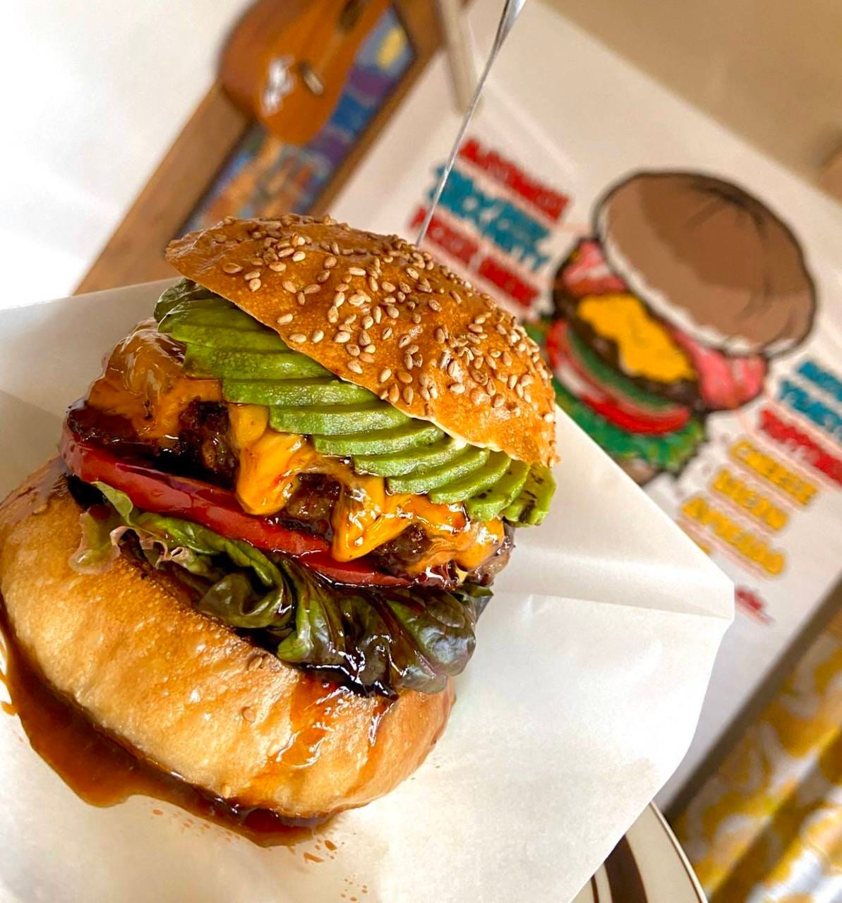
| 営業時間 | 昼 11:30〜16:00（L.O.15:30）／夜 17:30〜20:30（L.O.20:00） |
|---|---|
| 定休日 | 水曜 |
| 住所 | 奈良県橿原市葛本町259-1 1F |
| 予約 | 不要（テイクアウト可） — ☎ 050-5488-6467 |
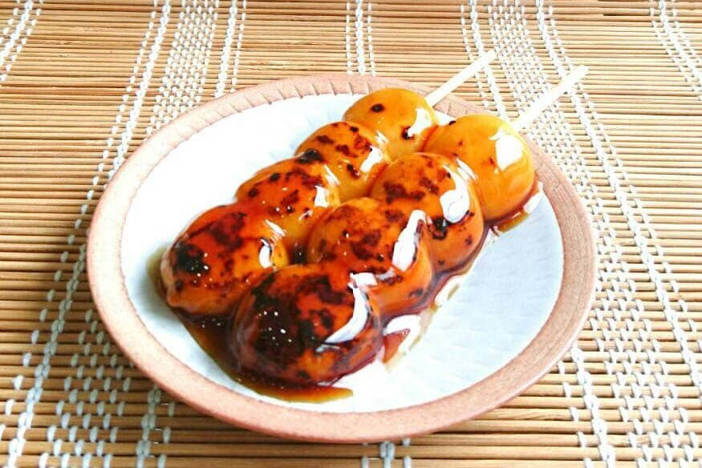
| 営業時間 | 9:00〜17:30(毎月17日のみ17:00まで) |
|---|---|
| 定休日 | 火曜日 |
| 住所 | 奈良県橿原市八木町1-8-5 |
| 予約 | 不可(店頭販売) — ☎ 0744-22-2945 ／ 公式サイト |
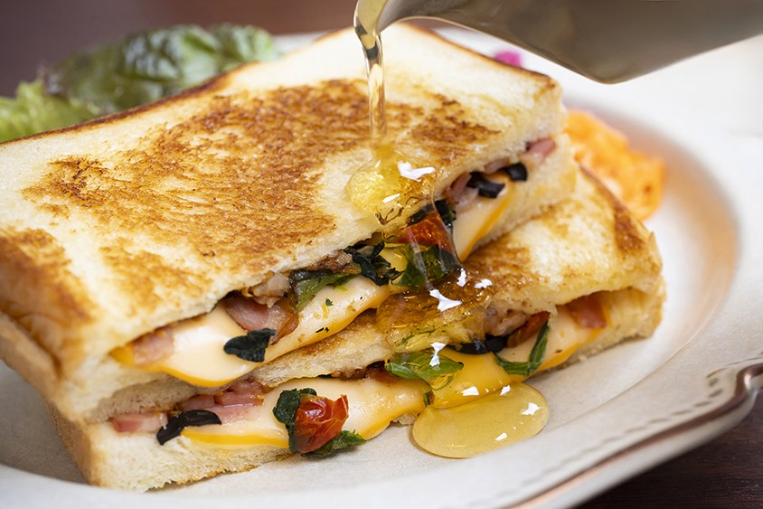
| 営業時間 | 7:00〜18:00 |
|---|---|
| 定休日 | 不定休(Instagramで告知) |
| 住所 | 奈良県橿原市新賀町235-8 サニービルTANAKA 1F |
| 予約 | 要確認 — ☎ 070-2318-5773 ／ 公式サイト |
| 営業時間 | 平日11:00〜17:00、土日祝11:00〜18:00 |
|---|---|
| 定休日 | 火・水曜日(祝日の場合は営業) |
| 住所 | 奈良県橿原市今井町4-3-22 |
| 予約 | 要確認 — ☎ 0744-29-7077 ／ 公式サイト |
| 営業時間 | 要確認 |
|---|---|
| 定休日 | 要確認(公式サイト「営業日のお知らせ」参照) |
| 住所 | 奈良県橿原市五条野町396-4 |
| 予約 | 要確認 — ☎ 0744-35-1512 ／ 公式サイト |
| 営業時間 | 10:00〜19:00 |
|---|---|
| 定休日 | 毎週水曜日 |
| 住所 | 奈良県橿原市内膳町5-1-13 |
| 予約 | 不可 — ☎ 0744-23-5636 ／ 公式サイト |
| 営業時間 | 10:30〜17:00(フードLO15:00、デザート&ドリンクLO16:30) |
|---|---|
| 定休日 | 火曜日(祝日は営業) |
| 住所 | 奈良県橿原市久米町934 |
| 予約 | 要確認 — 公式サイト |
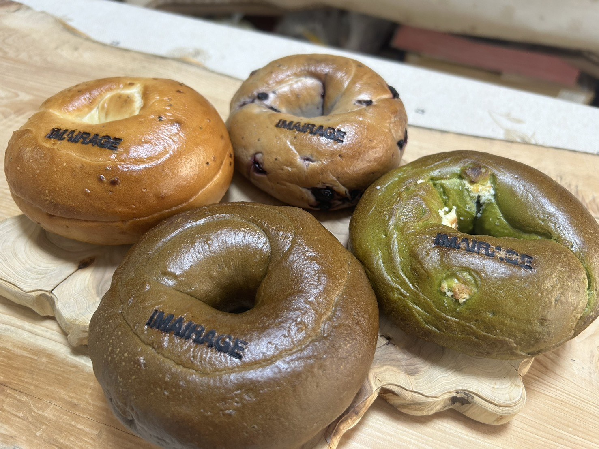
| 営業時間 | 7:30頃〜夕方(売り切れ次第終了) |
|---|---|
| 定休日 | 不定休 |
| 住所 | 奈良県橿原市今井町1-6-21 |
| 予約 | 不可 — ☎ 0744-47-3674 |
本ガイドは個人利用目的で作成。掲載情報は2026年9月時点の調査に基づく。写真出典: 各店の公式サイト・公式SNS、および地域情報サイト等の掲載写真（著作権は各サイト・各撮影者に帰属）。引用元は店ごとにカード内へ明記。